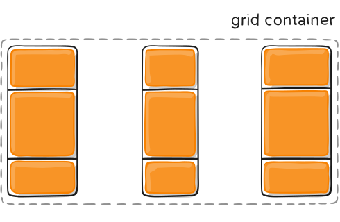
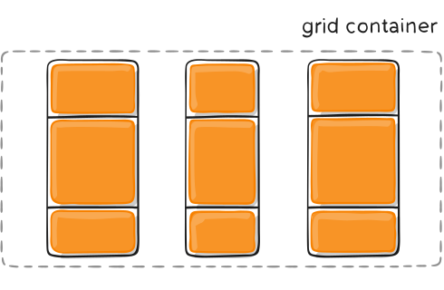
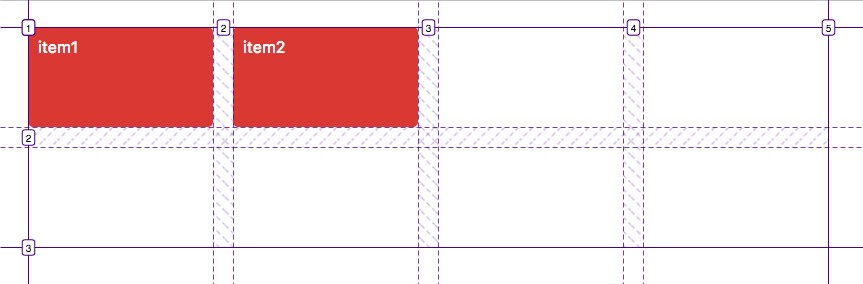
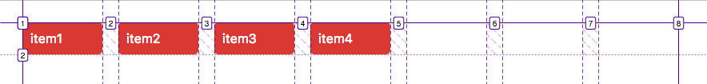
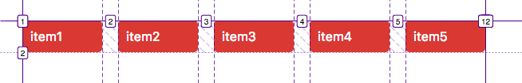
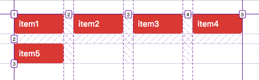
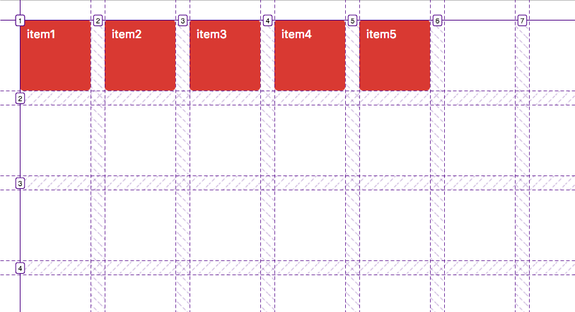

CSS Flexbox layout (Flexible Box)
So, I already have talked about flex box before in my CSS notes,
however I think the notes I took back then weren't very well organized,
and so I wanted to create a more complete guide of how flexbox works here. The reason
I include this section in this category of notes and not in my CSS notes is because
I am trying to organize some notes here and slowly start writing about tricks and tips
on how to make responsive websites. Flex box is one of the things a developer needs to
know well in order to make a website responsive, since if used correctly it can easily
make a website look good on all different screen sizes, without having to use
media queries and define how you want things to look on different screen sizes your self.
Background:
The Flexbox Layout (Flexible Box) module aims at providing a more efficient way to lay out,
align and distribute space among items in a container, even when their size is unknown and/or dynamic (thus the word "flex").
The main idea behind the flex layout is to give the container the ability to alter it's items width/height (and order) to best fill the container
the available space (mostly to accommodate to all kind of display devices and screen sizes). A flex container expands items to fill available free space
or shrinks them to prevent overflow.
Most importantly, the flexbox layout is direction-agnostic as opposed to the regular layouts (block which is vertically-based and inline which is horizontally-based).
While those work well for pages, they lack flexibility to support large or complex applications (especially when it comes to orientation changings, resizing, stretching, shrinking, etc).
Note: Flexbox layout is most appropriate to the components of an application, and small-scale layouts, while the Gred layout is intended for larger scale layouts.
Basics and terminology:
Since flexbox is a whole module and not a single property, it involves a lot of things including its whole set of properties.
Some of them are meant to be set on the container (parent element, known as "flex container") whereas the others are meant to be set on the children (said "flex items").
If "regular" layout is based on both block and inline flow directions, the flex layout
is based on "flex-flow directions". Please have a look at this figure from the specification, explaining the main idea behind the flex layout:

Items will be laid out following the main axis (from main-start to main-end) or the cross axis (from cross-start to cross-end).
- main axis - The main axis of a flex container is the primary axis along which flex items are laid out.
Beware, it is not necessarily horizontal, it depends on the flex-direction property.
- main-start | main-end - The flex items are placed within the container starting from main-start and going to main-end.
- main size - A flex item's width or height, whichever is the main dimension, is the item's main size. The flex item's main
size property is either 'width' or 'height' property, whichever is the main dimension.
- cross axis - The axis perpendicular to the main axis is called the cross axis. Its direction depends on the main axis direction.
- cross-start | cross-end - Flex lines are filled with items and placed into the container starting on the cross-start side of the
flex container and going towards the cross-end side.
- cross size - The width or height of a flex item, whichever is in the cross dimension, is the item's cross size.
The cross size property is whichever of 'width' or 'height' that is in the cross dimension.
Flexbox properties:
To make the notes more organized, I will split the flexbox properties in two categories, the
properties that are applied to the parent element, else known as the flex container, and the
properties that are applied directly to the children inside that flex container.
Properties for the Parent (flex container):

display property:
Before you start working with a flexbox you first have to define you flex container,
to do so you should use the display property, just like in the example bellow:
.container {
display: flex;
}
Note that CSS columns have no effect on a flex container.
flex-direction:

The flex-direction property establishes the main-axis, thus defining the direction flex items are placed in the flex container.
Flexbox is (aside from optional wrapping) a single-direction layout concept. Think of flex items as primarily
laying out either in horizontal rows or vertical columns.
.container {
display: flex;
flex-direction: row | row-reverse | column | column-reverse;
}
- row (default): left to right in ltr, right to left in rtl
- row-reverse: right to left in ltr, left to right in rtl
- column: same as row but top to bottom
- column-reverse: same as row-reverse but bottom to top
flex-wrap:

By default, flex items will all try to fit onto one line. You can change that and allow the items to wrap
as needed with this property.
.container {
flex-wrap: nowrap | wrap | wrap-reverse;
}
- nowrap (default): all flexx items will be on one line.
- wrap: flex items will wrap onto multiple lines, from top to bottom.
- wrap-reverse: flex items will wrap onto multiple lines from buttom to top.
There are some visual demos of flex-wrap here.
flex-flow:
This is a shorthand for the flex-direction and flex-wrap properties, which
together define the flex container's main and cross axes. The default value is row nowrap.
.container {
flex-flow: column wrap;
}
justify-content:

This defines the alignment along the main axis. It helps distribute extra free space leftover when either all the flex items on a line are inflexible, or
are flexible but have reached their maximum size. It also exerts some control over the alignment of items when they overflow the line.
.container {
justify-content: flex-start | flex-end | center | space-between | space-around | space-evenly | start | end | left | right ... + safe | unsafe;
}
- flex-start (default): items are packed towards the start of the flex-direction.
- flex-end: items are packed towards the end of the flex-direction
- start: items are packed towards the start of the writing-mode direction.
- end: items are packed towards the end of the wirting-mode direction.
- left: items are packed towards the left edge of the container, unless that doesn't make sense with the flex-direction, then it behaves like start.
- right: items are packed towards the right edge of the container, unless that doesn't make sense with the flex-direction, then it behavaves like end.
- center: items are center along the line.
- space-between: items are evenly distributed in the line, first item is on the start line, last item on the end line.
- space-around: items are evenly distributed in the line with equal space around them. Note that visually the spaces aren't equal, since
all the items have equal space on both sides. The first item will have one unit of space against the container edge, but two units of space between the next item
because that next item has its own spacing that applies.
- space-evenly: items are distributed so that the spacing between two items (and the space to the edges) is equal.
Note that that browser support for these values is nuanced. For example, space-between never got support for some versions of Edge, and start/end/left/right aren't in Chrome yet. The
safest values are flex-start, flex-end, and center.
There are also two additional keywords you can pair with these values: safe and unsafe. Using
safe ensures that however you do this type of positioning, you can't push an element such that it renders off-screen (e.g off the top) in such a way that content
can't be scrolled too (called "data loss").
align-items:

This defines the default behavior for how flex items are laid out along the cross-axis on the current line.
Think of it as the justify-content version for the cross-axis (perpendicular to the main-axis).
.container {
align-items: stretch | flex-start | flex-end | center | baseline | forst baseline | last baseline | start | end | self-start | self-end + ... safe | unsafe;
}
- stretch (default): stretch to fill the container (still respect min-width / max-width).
- flex-start / start / self-start: items are placed at the start of the cross axis. The difference between these is subtle, and is about
respecting the flex-direction rules or the writing-mode rules.
- flex-end / end / self-end: items are placed at the end of the cross axis. The difference again is subtle and is
about respecting flex-direction rules vs writing-mode rules.
- center: items are centerd in the cross-axis.
- baseline: items are aligned such as their baselines align.
The safe and unsafe modifier keywords can be used
in conjunction with all the rest of these keywords, and deal with helping you prevent aligning elements such as the content becomes inaccessible.
align-content:

This aligns a flex container's lines within when there is extra space in the cross-axis, similar to how justify-content aligns
individual items within the main-axis.
Note: this property only takes effect on multi-line flexible containers, where flex-flow is set to
either wrap or wrap-reverse. A signle-line flexible container (i.e. where flex-flow is set to it's default value, row nowrap) will not reflect align-content.
.container{
align-content: flex-start | flex-end | center | space-between | space-around | space-evenly | stretch | start | end | first baseline | last baseline + ... safe | unsafe;
}
- normal (default): items are packed in their default position as if no value was set.
- flex-start / start: items are packed to the start of the container. The (more supported) flex-start honors the
flex-direction while start honors the writing-mode direction.
- flex-end / end: items are packed to the end of the container. The (more supported) flex-end
honors the flex-direction while end honors the writing-mode direction.
- center: items are centered in the container.
- space-between: items are evenly distributed, the first line is at the start of the container while the last one is at the end.
- space-around: items are evenly distributed with equal space around each line.
- space-evenly: items are evenly distributed with equal space around them, I explaiend the
difference between this and space-around earleir in justify-content section.
- stretch: lines stretch to take up the remaining space.
The safe and unsafe modifier keywords can be used in conjunction with all the rest of these keywords, and deal with
helping you prevent aligning elements such that the content becomes inaccessible.
Properties for the children:

flex-grow:

This defines the ability for a flex item to grow if necessary.
It accepts a unitless value that serves as a proportion. It dictates what amount of the available space inside
the flex container the item should take up.
If all items have flex-grow set to 1, the remaining space in the container will be distributed equally to all children.
If one of the children has a value of 2, the remaining space would take up twice as much space as the others (or it will try to, at least).
.item {
flex-grow: 4; /* default is 0 */
}
Note: negative numbers are invalid.
flex-shrink:
Similar to flex-grow, this defines the ability for a flex item to shrink if necessary.
.item {
flex-shrink: 3; /* default is 1 */
}
Note: negative numbers are invalid.
flex-basis
This defines the default size of an element before the remaining space is distributed.
It can be a length (e.g. 20%, 5rem, etc.) or a keyword. The auto keyword means
"look at my width or height property" (which was temporarily done by the main-size keyword until deprecated).
The content keyword means "size it based on the item's content", this keyword isn't well
supported yet, so it's hard to test and harder to know what its brethren max-content, min-content,
and fit-content do.
.item {
flex-basis: length | auto; /* default is auto */
}
If set to 0, the extra space around content isn't factored in. If set to auto,
the extra space is distributed based on it's flex-grow value. See this graphic.
flex:
This is the shorthand for flex-grow, flex-shrink and
flex-basis combined. The second and third parameters (flex-shrink and flex-basis) are optional.
The default is 0 1 auto, but if you set it with a single number value, it's like 1 0.
.item {
flex: none | [ <'flex-grow'> <'flex-shrink'>? || <'flex-basis'> ];
}
It is recommended that you use this shorthand property rather than set the individual properties.
The shorthand sets the other values intelligently.
order:

By default, flex items are laid out in the source order. However, the otder property
controls the order in which they appear in the flex container.
.item {
order: 5; /* default is 0 */
}
align-self:

This allows the default alignment (or the one specified by align-items) to be
overridden for individual flex items.
You can read all the values it can take above in the section I talked about align-items.
.itme {
align-self: auto | flex-start | flex-end | center | baseline | stretch;
}
Note that float, clear and vertical-align have no effect on a flex item.
Prefixing Flexbox
Flexbox requires some vendor prefixing to support the most browsers possible.
It doesn't just include prepending properties with the vendor prefix, but there are actually
entirely different property and value names. This is because the Flexbox spec has changed over time, creating
an old", "tweener", and "new" versions.
Perhaps the best way to handle this is to write the new (and final) syntax and run your CSS through Autoprefixer, which handles the fallbacks very well,
I still haven't learned how to use this however but I am planning learn and write about Autoprefixer later in this page.
Alternatively you can use Sass @mixin to help with some of the prefixing, which also
gives you an idea of what kind of things need to be done, I'm still unfamiliar with Sass
though but I'm planning to learn this too as well and I will probably write notes about it
in my CSS notes.
Anyway, here is an example of how Sass @mixin can be used:
@mixin flexbox() {
display: -webkit-box;
display: -mox-box;
display: -webkit-flex;
display: flex;
}
@mixin flex($values) {
-webkit-box-flex: $values;
-moz-box-flex: $values;
-webkit-flex: $values;
-ms-flex: $values;
flex: $values;
}
@mixin order($val) {
-webkit-box-ordinal-group: $val;
-moz-box-ordinal-group: $val;
-ms-flex-order: $val;
-webkit-order: $val;
order: $val;
}
.wrapper {
@include flexbox();
}
.item {
@include flex(1 200px);
@include order(2);
}
Examples:
Here I will include some examples of when and how can flexbox be useful to you.
Let's start with a very very simple example, solving an almost daily problem:
perfect centering. It couldn't be any simplier if you use flexbox.
HTML Code:
<div id="parent1">
<div id="child1"></div>
</div>
CSS Code:
#parent1 {
height: 200px;
width: 200px;
border: 3px solid black;
border-radius: 20px;
background-color: pink;
display: flex;
margin: auto;
}
#child1 {
width: 50px;
height: 50px;
background-color: white;
border: 3px solid black;
border-radius: 20px;
margin: auto; /* magic! */
}
Outcome:
This relies on the fact that a margin set to auto in a flex container absorbs extra space.
So setting margin to auto will make the item perfetly centered in both axes. Need
more help understanding how it works, you can read this article
which explains how margin="auto" works a little bit better.
Now let's use some more properties. Consider a list of 6 items, all with fixed dimensions, but can
be auto-sized. We want them to be evenly distributed on the horizontal axis so that when we resize the browser, everything scales nicely, and without media queries.
HTML Code:
<div id="parent2">
<div class="children2"></div>
<div class="children2"></div>
<div class="children2"></div>
<div class="children2"></div>
<div class="children2"></div>
<div class="children2"></div>
</div>
CSS Code:
#parent2 {
width: 50%;
height: fit-content;
background-color: black;
border: 3px solid black;
margin: auto;
display: flex;
flex-flow: row wrap;
justify-content: space-around;
align-content: space-evenly;
overflow: hidden;
}
.children2{
width: 120px;
height: 50px;
margin: 20px;
flex-shrink: 0;
background-color: white;
}
Outcome:
Let's try something else. Imagine we have a right-aligned navigation element on the very top of our website, but
we want it to be centered on medium-sized screens and single-columned on small devices. Easy enough.
HTML Code:
<div id="navigationBar">
<div><span><a>Home</a></span></div>
<div><span<a>About</a></span></div>
<div><span><a>Products</a></span></div>
<div><span><a>Contact</a></span></div>
</div></span></p>
CSS Code:
#navigationBar {
box-sizing: border-box;
width: 100%;
height: fit-content;
border: 3px solid black;
background-color: black;
display: flex;
flex-flow: row wrap;
justify-content: flex-end;
align-items: stretch;
}
#navigationBar div{
padding: 20px;
font-size: 4vh;
display: flex;
color: white;
}
#navigationBar div span{
margin: auto;
background-color: unset;
}
#navigationBar div:hover{
/* I just reset some styles I had added to all links in the past */
cursor: pointer;
background-color: gray;
color: black;
}
#navigationBar div span a:hover{
text-shadow: unset;
color: unset;
text-decoration: unset;
}
#navigationBar div span a{
user-select: none;
}
@media all and (max-width: 800px) {
/* When on medium sized screens */
#navigationBar {
justify-content: space-around;
}
}
@media all and (max-width: 600px) {
/* When on small sized screens */
#navigationBar {
flex-direction: column;
}
}
Outcome:
Let's try something even better by playing with flex items fexibility! What about a mobile-first 3-columns layout with
full-width header and footer. And independent from source order.
HTML Code:
<div class="wrapper1">
<header class="header1">Header</header>
<article class="main">
Pellentesque habitant morbi tristique
senectus et netus et malesuada fames ac turpis egestas.
Vestibulum tortor quam, feugiat vitae, ultricies eget, tempor
sit amet, ante. Donec eu libero sit amet quam egestas semper.
Aenean ultricies mi vitae est. Mauris placerat eleifend leo.
</article>
<aside class="aside aside1">Aside 1</aside>
<aside class="aside aside2">Aside 2</aside>
<footer class="footer1">Footer</footer>
</div>
CSS Code:
.wrapper1 {
display: flex;
flex-flow: row wrap;
text-align: center;
font-weight: bold;
}
.wrapper1 > * {
/* each item takes one row each and
that's because flex-basis is set to 100%, meaning
all items will take 100% width */
flex: 1 100%;
padding: 10px;
}
/* Medium screens */
@media all and (min-width: 600px) {
.aside {
/* this makes aside divs share one row,
the way it works is that since the flex-basis is
set to 0px, their min width is 0px, I also set their flex-grow
to 1, meaning they should grow and share the same ammount of free
available, and that's why free space is shared
equally among them and at the end each takes
half of the row, the same exact effect could be achieved
by writing flex: 1 0 0, or flex-basis: 0; flex-grow: 1 */
flex: 1 0px;
}
}
/* Large screens */
@media all and (min-width: 800px){
/* We invert order of elements and tell the main element
to take twice as much width as the other two sidebars. So,
since screen size is higher than 800px, it also is higher than 600px,
and the styles we set before still apply here, which means aside1 and aside2
styles I set before are still in use. I used the order property and
placed the main div between the two asides, and also I changed it's flex property
to flex: 3 0px, meaning, just like the aside divs, it has a min-width of 0px,
and it's flex-grow is set to 3, while the aside divs flex-grow is set to 1,
and that's why it grows twice as much as the two asides. Footer and header
still take the full width since their flex-basis is set to 100% */
.main {
flex: 3 0px;
order: 2;
}
.aside1 {
order: 1;
}
.aside2 {
order: 3;
}
.footer1 {
order: 4;
}
}
.header1 {
background-color: coral;
}
.footer1 {
background-color: lime;
}
.main {
background-color: cornsilk;
}
.aside1 {
background-color: yellow;
}
.aside2 {
background-color: pink;
}
Outcome:
Pellentesque habitant morbi tristique
senectus et netus et malesuada fames ac turpis egestas.
Vestibulum tortor quam, feugiat vitae, ultricies eget, tempor
sit amet, ante. Donec eu libero sit amet quam egestas semper.
Aenean ultricies mi vitae est. Mauris placerat eleifend leo.
Try resizing your browser to see the results of the code,
this code above is a great example of how responsive websites
can actually be built, with only a few clever lines of code we
have built a webpage layout that looks nice on all different screen sizes.
Credits for the information included in this section:
This section is mostly copied from this amazing article, made by Chris Coyier.
Those notes I keep are kept for personal use, and the main reason I keep them is because I can this way
keep information organized somewhere, without having to make a long list of links from all the different websites
I read and have to look through them whenever I need to remember somethimg. Also,
while copying those articles I do not copy paste, I type everything my self, slowly, while trying to
understand what it is I write and also look for ways I could improve the way some stuff are explained if I judge
this is needed. Writing things down is how I learn, and that's a major reason why I do what I do, however,
I do not recommend to anyone to use my notes to study, since they are not very well written, especially the
first pages I made as a beginner, and also, a lot of stuff I write here are copied from other sites.
CSS Grid Layout (aka "Grid")
In this section we are gonna learn about another really useful CSS feauture,
which is Grid, it's similar to Flexbox, but harder and much more powerful if used correctly.
Introduction:
CSS Grid Layout (aka "Grid"), is a two-dimensional grid-based layout system that aims to do nothing less than
completely change the way we design grid-based user interfaces. CSS has always been used to lay out our web pages, but it's never
done a very good job for it. First, we used tables, then floats, positioning and inline-blocks, but all of these methods were essentially
hacks and left out a lot of important functionality (vertical centering, for instance). Flexbox helped out,
but it's intended for simplier one-dimensional layouts, not complex two-dimensional ones (Flexbox and Grid actually work very well together). Grid is the very
first CSS module created specifically to solve the layout problems we've all been hacking our way around fo as
long as we've been making websites.
Important terminology:
Before diving into the concepts of Grid it's important to understand the
terminology. Since the terms involved here are all kinda conceptually similar, it's easy
to confuse them with one another if you don't first memorize their meanings defined by the Grid specification. But don't worry, there aren't many of them.
Grid Container
The element on which display: grid is applied. It's the direct parent of all
the grid items. In this example container is the grid container:
<style>
.container{
display: grid;
}
</style>
<div class="container">
<div class="item item-1"> </div>
<div class="item item-2"> </div>
<div class="item item-3"> </div>
</div>
Grid Item
The children (i.e. direct descendants) of the grid container. Here the item elements
are grid items, but sub-item is not.
<div class="container">
<div class="item"> </div>
<div class="item">
<p class="sub-item"> </p>
</div>
<div class="item"> </div>
</div>
Grid Line
The dividing lines that make up the structure of the grid. They can be either vertical ("column grid lines") or
horizontal ("row grid lines") and reside on either side of a row or column. Here the yellow line is an example
of a column grid line.

Grid Cell
The space between two adjacent row and two adjacent column grid lines.
It's a single "unit" of the grid. Here's the grid cell between row grid lines 1 and 2,
and column grid lines 2 and 3:

Grid Track
The space between two adjacent grid lines. You can think of them line the columns or rows of the grid.
Here's the grid track between the second and third row grid lines:

Grid Area
The total space surrounded by four grid lines. A grid area may be composed of any number of grid cells.
Here's the grid area between row grid lines 1 and 3, and column grid lines 1 and 3:

Grid Properties:
To keep my notes more organized I will split the properties into two groups,
the properties for the parent (Grid Container) and the properties for the children
(Grid Items).
Properties for the Grid Container
Properties for the Grid Items
Properties for the Parent (Grid Container)
The properties mentioned bellow should only be used inside the grid container.
display:
Defines the element as a grid container and establishes a new grid formatting context for it's contents.
Values:
- grid - generates a block-level grid
- inline-grid - generates an inline-level grid
.container {
display: grid | inline-grid;
}
grid-template-columns
grid-template-rows
Defines the columns and rows of the grid with a space-seperated list of values. The
values represent the track size, and the space between them represents the grid line.
Values:
- <track-size> - can be a length, a percentage, or a fraction of the free space in the grid
(using the fr unit)
- <line-name> - an arbitrary name of your choosing
.container {
grid-template-columns: ... | ...;
grid-template-rows: ... | ...;
}
Examples:
When you leave an empty space between the track values, the grid lines are automatically assigned positive and negative numbers:
.container {
grid-template-columns: 40px 50px auto 50px 40px;
grid-template-rows: 25% 100px auto;
}

But you can choose to explicitly name the lines. Note the bracket syntax for the line names:
.container {
grid-template-columns: [first] 40px [line2] 50px [line3] auto [col4-start] 50px [five] 40px [end];
grid-template-rows: [row1-start] 25% [row1-end] 100px [third-line] auto [last-line];
}

Note that a line can have more than one name. For example, here the second line will have
two names: row1-end and row2-end:
.container {
grid-template-rows: [row1-start] 25% [row1-end row2-start] 25% [row2-end];
}
If your definition contains repeating parts, you can use the repeat() notation to streamline things:
.container {
grid-template-columns: repeat(3, 20px [col-start]);
}
Which is equivalent to this:
.container {
grid-template-columns: 20px [col-start] 20px [col-start] 20px [col-start];
}
If multiple lines share the same name, they can be referenced by their line name and count.
.item {
grid-column-start: col-start 2;
}
The fr unit allows you to set the size of a track as
a fraction of the free space of the grid container. For example, this will set
each item to one third of width of the grid container:
.container {
grid-template-columns: 1fr 1fr 1fr;
}
The free space is calculated after any non-flexible items. In this example the total amount of free
space available to the fr units doesn't include the 50px:
.container {
grid-template-columns: 1fr 50px 1fr 1fr;
}
grid-template-areas:
Defines a grid template by referencing the names of the grid areas which are specified with
the grid-area property. Repeating the name of a grid area causes the content to span those cells.
A period signifies an empty cell. The syntax itself provides a visualization of the structure of the grid.
Values:
- <grid-area-name> - the name of a grid area specified with grid-area
- . - a period signifies an empty grid cell
- none - no grid areas are defined
Example:
HTML Code:
<div id="container1">
<div id="item1">Header</div>
<div id="item2">Main</div>
<div id="item3">Sidebar</div>
<div id="item4">Footer</div>
</div>
CSS Code:
#container1 {
background-color: white;
border: 3px solid black;
width: fit-content;
height: fit-content;
margin: auto;
display: grid;
grid-template-columns: 50px 50px 50px 100px;
grid-template-rows: auto;
grid-template-areas:
"header header header header"
"main main . sidebar"
"footer footer footer footer";
}
#container1 > *{
text-align: center;
font-weight: bold;
border: 3px solid black;
}
#item1{
grid-area: header;
background-color: red;
}
#item2{
grid-area: main;
background-color: pink
}
#item3{
grid-area: sidebar;
background-color: lime;
}
#item4{
grid-area: footer;
background-color: coral;
}
Outcome:
Header
Main
Sidebar
Footer
So, you may be a little confused of this example,
first of all we define the grid-template-columns and rows,
we made it so that the grid has three columns of 50px each
at the beginning, and one with 100px at the end. We set rows
to auto, meaning their height will be determined by the content
inside them.Then we used grid-template-areas, to set the areas
we used strings, each string is one row, an empty space
is used to seperate the areas names, the first three header
I wrote will take 50px each, since the first 3 columns
are 50px each, the last header will take 100px, since
the last column is 100px. Sime logic applies to the other
areas, the dot at the second row defines an empty cell.
Here is an image that may help you understand it better:

The image above displays a grid different from the example I previously created,
the difference is that in the image all columns take only 50px, while in my example I
made the last column take 100px.
Each row in your declaration needs to have the same number of cells.
You can use any number of adjacent periods to declare a single empty cell. As long as the
periods have no spaces between them they represent a single cell.
Notice that you're not naming lines with this syntax, just areas. When you use this syntax the lines on
either end of the areas are actually getting named automatically. If the name of your grid area is foo,
the name of the area's starting row line and starting column line will be foo-start, and the name of its last row line
and last column line will be foo-end. This means that some lines might have multiple names,
such as the far left line in above example, which will have three names: header-start, main-start, and footer-start.
grid-template
A shorthand for setting grid-template-rows,
grid-template-columns, and grid-template-areas
in a single declaration.
Values:
- none - sets all three properties to their initial values
- <grid-template-rows> / <grid-template-columns> - sets
grid-template-columns and grid-template-rows to the specified values, respectively, and sets grid-template-areas to none
.container {
grid-template: none | <grid-template-rows> / <grid-template-columns>;
}
It also accepts a more complex but quite handy syntax for specifying all three. Here's an example:
.container {
grid-template:
[row1-start] "header header header" 25px [row1-end]
[row2-start] "footer footer footer" 25px [row2-end]
/ auto 50px auto;
}
This is equivalent to this:
.container {
grid-template-rows: [row1-start] 25px [row1-end row2-start] 25px [row2-end];
grid-template-columns: auto 50px auto;
grid-template-areas:
"header header header"
"footer footer footer";
}
Since grid-template doesn't reset the implicit
grid properties (grid-auto-columns, grid-auto-rows,
and grid-auto-flow), which is probably what you want to do in most cases,
it's recommended to use the grid property instead of grid-template.
column-gap
row-gap
grid-column-gap
grid-row-gap
Specifies the size of the grid lines. You can think of it as setting the width
of the gutters between columns/rows.
Values:
- <line-size> - a length value
.container {
/* standard */
column-gap: <line-size>;
row-gap: <line-size>
/* old */
grid-column-gap: <line-size>;
grid-row-gap: <line-size>;
}
Example:
.container {
grid-template-columns: 100px 100px 100px;
grid-template-rows: 80px 80px 80px;
column-gap: 10px;
row-gap: 15px;
}

The gutters are only created between the columns/rows, not on the outer edges.
Note: The grid- prefix will be removed and grid-column-gap and grid-row-gap
renamed to column-gap and row-gap. The unprefixed properties are already supported in Chrome 68+, Safari 11.2, Release 50+ and Opera 54+.
gap
grid-gap
A shorthand for row-gap and column-gap
Values:
- <grid-row-gap> <grid-column-gap> - length values
.container {
/* standard */
gap: <grid-row-gap> <grid-column-gap>;
/* old */
grid-gap: <grid-row-gap> <grid-column-gap>;
}
Example:
.container {
grid-template-columns: 100px 100px 100px;
grid-template-rows: 80px 80px 80px;
gap: 15px 10px;
}
If no row-gap is specified, it's set to the same value as column-gap.
justify-items
Aligns grid items along the inline (row) axis (as opposed to align-items which
aligns along the block (column) axis). This value applies to all grid items inside the container.
Values:
- start - aligns items to be flushed with the start edge of their cell
- end - aligns items to be flushed with the end edge of their cell
- center - aligns items in the center of their cell
- stretch - fills the whole width of the cell (this is the default)
.container {
justify-items: start | end | center | stretch;
}
Examples:
.container {
justify-items: start;
}

.container {
justify-items: end;
}

.container {
justify-items: center;
}

.container {
justify-items: stretch;
}

This behavior can also be set on individual grid items via the justify-self property.
align-items
Aligns grid items along the block (column) axis (as opposed to justify-items which
aligns along the inline (row) axis). This value applies to all grid items inside the container.
Values:
- start - aligns items to be flush with the start edge of their cell
- end - aligns items to be flush with the end edge of their cell
- center - aligns items in the center of their cell
- stretch - fills the whole height of the cell (this is the default)
.container {
align-items: start | end | center | stretch;
}
Examples:
.container {
align-items: start;
}

.container {
align-items: end;
}

.container {
align-items: center;
}

.container {
align-items: stretch;
}

This behavior can also be set on individual grid items via the align-self property.
place-items
place-items sets both the align-items and justify-items
properties in a single declaration.
Values:
- <align-items> / <justify-items> - The
first value sets align-items, the second value sets justify-items. If the
second value is omitted, the first value is assigned to both properties.
All major browsers except Edge support the place-items shorthand property.
justify-content
Sometimes the total size of your grid might be less than the size of it's grid container. This
could happen if all of your grid items are sized with non flexible units like px. In this case you can set the
alignment of the grid within the grid container. This property aligns the grid along the inline (row) axis (as opposed to align-content which
aligns the grid along the block (column) axis).
Values:
- start - aligns the grid to be flush with the start edge of the grid container
- end - aligns the grid to be flush with the end edge of the grid container
- center - aligns the grid in the center of the grid container
- stretch - resizes the grid items to allow the grid to fill the full width of the grid container
- space-around - places an even amount of space between each grid item, with half-sized spaces on the far ends
- space-between - places an even amount of space between each grid item, with no space at the far ends
- space-evenly - places an even amount of space between each grid item, including the far ends
.container {
justify-content: start | end | center | stretch | space-around | space-between | space-evenly;
}
Examples:
.container {
justify-content: start;
}

.container {
justify-content: end;
}

.container {
justify-content: center;
}

.container {
justify-content: stretch;
}

.container {
justify-content: space-around;
}

.container {
justify-content: space-between;
}

.container {
justify-content: space-evenly;
}

align-content
Sometimes the total size of your grid might be less than the size of it's container. This could
happen if all of your grid items are size with non-flexible units like px for example. In this case you can set the
alignment of the grid within the grid container. This property aligns the grid along the block (column) axis (as opposed to justify-content which
aligns the grid along the inline (row) axis).
Values:
- start - aligns the grid to be flush with the start edge of the grid container
- end - aligns the grid to be flush with the end edge of the grid container
- center - aligns the grid in the center of the grid container
- stretch - resizes the grid items to allow the grid to fill the full height of the grid container
- space-around - places an even amount of space between each grid item, with half-sized spaces on the far ends
- space-between - places an even amount of space between each grid item, with no space at the far ends
- space-evenly - places an even amount of space between each grid item, including the far ends
.container {
align-content: start | end | center | stretch | space-around | space-between | space-evenly;
}
Examples:
.container {
align-content: start;
}

.container {
align-content: end;
}

.container {
align-content: center;
}

.container {
align-content: stretch;
}

.container {
align-content: space-around;
}

.container {
align-content: space-between;
}

.container {
align-content: space-evenly;
}

place-content
place-content sets both the align-content and justify-content
properties in a single declaration.
Values:
- <align-content> / <justify-content> - The first value
sets align-content, the second value sets justify-content. If the second value is omitted, the
first value is assigned to both properties.
All major browsers except Edge support the place-content shorthand property.
grid-auto-columns
grid-auto-rows
Specifies the size of any auto-generated grid tracks (aka implicit grid tracks). Implicit tracks get
created when there are more grid items than cells in the grid or when a grid item is placed outside of the
explicit grid. I will write more about the difference between explicit and implicit grids after we have talked about
all properties first.
Values:
- <track-size> - can be a length, a percentage, or a fraction of the free space in the grid (using the fr unit)
.container {
grid-auto-columns: <track-size> ...;
grid-auto-rows: <track-size> ...;
}
To illustrate how implicit grid tracks get created, think about this:
.container {
grid-template-columns: 60px 60px;
grid-template-rows: 90px 90px;
}

This creates a 2 x 2 grod.
But now imagine you use grid-column and grid-row
to position your grid items like this: (I am explaining those two properties bellow in the
section that I write about grid items properties you may want to check these out first to better understand the example)
.item-a {
grid-column: 1 / 2;
grid-row: 2 / 3;
}
.item-b {
grid-column: 5 / 6;
grid-row: 2 / 3;
}

We told item-b to start on column line 5 and end at column line 6, but we never defined a column line 5
or 6. Because we referenced lines that don't exist, implicit tracks with widths of 0 are created to fill the gaps. We
can use grid-auto-columns and grid-auto-rows to specify the width of these implicit tracks:
.container {
grid-auto-columns: 60px;
}

grid-auto-flow
If you have grid items that you don't explicitly place on the grid, the auto-placement algorithm
kicks in to automatically place the items. This property controls how the auto-placement algorithm works.
Values:
- row - tells the auto-placement algorithm to fill in each
row in turn, adding new rows as necessary (default)
- column - tells the auto-placement algorithm to fill in each column in
turn, adding new columns as necessary
- dense - tells the auto-placement algorithm to attempt to fill in holes earlier in the grid if smaller items come up later.
.container {
grid-auto-flow: row | column | row dense | column dense;
}
Note: dense only changes the visual order of your items and might
cause them to appear out of order, which is bad for accessibility.
Examples:
Consider this HTML:
<section class="container">
<div class="item-1">item-a<div>
<div class="item-2">item-b<div>
<div class="item-3">item-c<div>
<div class="item-4">item-d<div>
<div class="item-5">item-e<div>
</section>
You define a grid with five columns and two rows, and set grid-auto-flow
to row (which is also the default):
.container {
display: grid;
grid-template-columns: 60px 60px 60px 60px 60px;
grid-template-rows: 30px 30px;
grid-auto-flow: row;
}
When placing the items on the grid, you only specify spots for two of them:
.item-1 {
grid-column: 1;
grid-row: 1 / 3;
}
.item-5 {
grid-column: 5;
grid-row: 1 / 3;
}
Because we set grid-auto-flow to row, our grid will look like this. Notice
how the three items we didn't place (item-2, item-3 and item-4) flow across the available columns:

If we instead set grid-auto-flow to column, item-2, item3 and item-4 will flow down the rows.
.container {
display: grid;
grid-template-columns: 60px 60px 60px 60px 60px;
grid-template-rows: 30px 30px;
grid-auto-flow: column;
}

grid
A shorthand for setting all of the following properties in a single declaration:
grid-template-rows, grid-template-columns, grid-template-areas,
grid-auto-rows, grid-auto-columns, and grid-auto-flow
(Note: You can only specify the explicit or the implicit grid properties in a single grid declaration).
Values:
- none - sets all sub-properties to their initial values.
- <grid-template> - works the same as the grid-template shorthand.
- <grid-template-rows> / [ auto-flow && dense? ] <grid-columns>? - sets
grid-template-rows to the specified value. If the auto-flow keyword is the right of the slash, it
sets grid-auto-flow to column. If the dense keyword
is specified additionally, the auto-placement algorithm uses a "dense" packing algorithm.
If grid-auto-columns is omitted, it is set to auto.
- [ auto-flow && dense? ] <grid-auto-rows>? / <grid-template-columns> -
Sets grid-template-columns to the specified value. If the auto-flow keyword is to
the left of the slash, it sets grid-auto-flow to row. If the dense keyword is
specified additionally, the auto-placement algorithm uses a "dense" packing algorithm. If grid-auto-rows is
omitted, it is set to auto.
Examples:
The following two code blocks are quivalent:
.container {
grid: 100px 300px / 3fr 1fr;
}
.container {
grid-template-rows: 100px 300px;
grid-template-columns: 3fr 1fr;
}
The following two code blocks are quivalent:
.container {
grid: auto-flow / 200px 1fr;
}
.container {
grid-auto-flow: row;
grid-template-columns: 200px 1fr;
}
The following two code blocks are quivalent:
.container {
grid: auto-flow dense 100px / 1fr 2fr;
}
.container {
grid-auto-flow: row dense;
grid-auto-rows: 100 px;
grid-template-columns: 1fr 2fr;
}
The following two code blocks are quivalent:
.container {
grid: 100px 300px / auto-flow 200px;
}
.container {
grid-template-rows: 100px 300px;
grid-auto-flow: column;
grid-auto-columns: 200px;
}
It also accepts a more complex but quite handy syntax for setting everything at once. You specify
grid-template-areas, grid-template-rows and grid-template-columns,
and all the other sub-properties are set to their initial values. What you're doing is specifying the line names and track sizes
inline with the respective grid areas. This is easiest to describe with an example:
.container {
grid: [row1-start] "header header header" 1fr [row1-end]
[row2-start "footer footer footer" 25px [row2-end]
/ auto 50px auto;
}
This is equivalent to this:
,container {
grid-template-areas:
"header header header"
"footer footer footer";
grid-template-rows: [row1-start] 1fr [row1-end];
grid-template-columns: auto 50px auto;
}
Properties for the Children (Grid Items)
Note: float, display: inline-block, display: table-cell, vertical-align
and column-* properties have no effect on a grid item.
grid-column-start
grid-column-end
grid-row-start
grid-row-end
Determines a grid item's location within grid by referring to specific grid lines.
grid-column-start / grid-row-start is the line here the item
begins, and grid-column-end / grid-row-end is the line where the item ends.
Values:
- &line> - can be a number to refer to a numbered grid line, or a name to refer to a named grid line
- span <number> - the item will span across the provided number of grid tracks
- span <name> - the item will span across until it hits the next line with the provided name
- auto - indicates auto-placement, an automatic span, or default span of one
.item {
grid-column-start: <number> | <name> | span <number> | span <name> | auto;
grid-column-end: <number> | <name> | span <number> | span <name> | auto;
grid-row-start: <number> | <name> | span <number> | span <name> | auto;
grid-row-end: <number> | <name> | span <number> | span <name> | auto;
}
Examples:
.item-a {
grid-column-start: 2;
grid-column-end: five;
grid-row-start: row1-start;
grid-row-end: 3;
}

.item-b {
grid-column-start: 1;
grid-column-end: span col4-start;
grid-row-start: 2;
grid-row-end: span 2;
}

If no grid-column-end / grid-row-end is declared, the item will span 1 track by default.
grid-column
grid-row
Shorthand for grid-column-start + grid-column-end, and
grid-row-start + grid-row-end, respectively.
Values:
- <start-line> / <end-line> - each one accepts all the same values as the longhand version, including span
.item {
grid-column: / | / span ;
grid-row: / | / span ;
}
Example:
.item-c {
grid-column: 3 / span 2;
grid-row: third-line / 4;
}

If no end line value is declared, the item will span 1 track by default.
grid-area
Gives an item a name so that it can be referenced by a template created with the grid-template-areas property. Alternatively, this
property can be used as an even shorter shorthand for grid-row-start + grid-column-start + grid-row-end
+ grid-row-end + grid-column-end.
Values:
- <name> - a name of your choosing
- <row-start> / <column-start> / <row-end> / <column-end> - can be numbers or named lines
.item {
grid-area: <name> | <row-start> / <column-start? / <row-end> / <column-end>;
}
Example:
.item-d {
grid-area: 1 / col4-start / last-line / 6;
}

justify-self
Aligns a grid item inside a cell along the inline (row) axis (as opposed to align-self which aligns
along the block (column) axis). This property applies to a grid item inside a single cell.
Values:
- start - aligns the grid item to be flush with the start edge of the cell
- end - aligns the grid item to be flush with the end edge of the cell
- center - aligns the grid item in the center of the cell
- stretch - fills the whole width of the cell (this is the default)
.item {
justify-self: start | end | center | stretch;
}
To set alignment for all the items in a grid, this behavior can also be set on the grid container via the justify-items property.
align-self
Aligns a grid item inside a cell along the block (column) acis (as opposed to justify-self which
aligns along the inline (rows) axis). This value applies to the content inside a single grid item.
Values:
- start - aligns the grid item to be flush with the start edge of the cell
- end - aligns the grid item to be flush with the end edge of the cell
- center - aligns the grid item in the center of the cell
- stretch - fills the whole height of the cell (this is the default)
.item {
aligns-self: start | end | center | stretch;
}
To align all items in a grid, this behavior can also be set on the grid container via the align-items property.
place-self
place-self sets both the align-self and justify-self
properties in a single declaration.
Values:
- auto - The "default" alignment for the layout mode.
- <align-self> / <justify-self> - the first value sets align-self, the second value
sets justify-self. If the second value is omitted, the first value is assigned to both properties.
All major browsers except Edge support the place-self shorthand property.
Special functions and keywords:
- When sizing rows and columns, you can use all the lengths you are used to, like px, rem, %, etc, but
you also have keywords like min-content, max-content, auto,
and perhaps the most useful, fractional units. grid-template-columns: 200px 1fr 2fr min-content;
- You also have access to a function which can help set boundaries for otherwise flexible units. For
example to set a column to be 1fr, but shrink no further than 200px: grid-template-folumns: 1fr minmax(200px, 1fr);
- There is repeat() function, which saves some typing like making 10 columns: grid-template-columns: repeat(10, 1fr)
- Combining all of these can be extremely powerful, like grid-template-columns: repeat(auto-fill, minmax(200px, 1fr));
Fluid columns snippet:
Fluid width columns that break into more or less columns as space is available, with no media queries:
HTML Code:
<div class="grid-example">
<div>...</div>
<div>...</div>
<div>...</div>
<div>...</div>
<div>...</div>
<div>...</div>
<div>...</div>
<div>...</div>
<div>...</div>
</div>
CSS Code:
.grid-example{
background-color: black;
width: 70%;
border: 3px solid black;
border-radius: 20px;
padding: 50px;
margin: auto;
display: grid;
grid-template-columns: repeat(auto-fill, minmax(250px, 1fr));
/* auto-fill means it will repeat as many times as necessary to fill the max
size of the grid without overflowing, and all columns are declared to span
1 fraction of the width available, however, they cannot be less than 100px */
grid-gap: 1rem;
/* this adds a gap between the cells, since only one value is specified it is
assigned to both column and row gaps */
}
.grid-example > div {
background: #EDE7F6;
padding: 1.5rem;
border-radius: 1rem;
}
Outcome::
Quibusdam, eos esse dolorum facere voluptatem eius, dolore quas totam aspernatur obcaecati harum? Nihil eligendi eos minus odit minima earum incidunt rem fugit reprehenderit, molestiae possimus eveniet itaque laudantium excepturi.
Ducimus quibusdam inventore delectus doloribus dignissimos. Dignissimos quos officia minus exercitationem perspiciatis harum iusto molestiae deleniti quod sunt amet recusandae autem, neque doloremque ad alias eaque consequuntur nesciunt quis eius!
Cumque aspernatur ex ipsum dolorum eius, tempore omnis minus sequi architecto totam sunt maxime nemo, ab repellendus. Aut voluptatem saepe voluptatibus nisi ipsum. Debitis corporis culpa ipsa error nemo doloribus.
Consequatur dolore, architecto quos saepe consequuntur libero minus totam? Enim optio provident commodi corporis officiis, sunt maiores? Cupiditate consequuntur, cumque natus corporis velit sunt ad magni aliquid facere deleniti molestiae.
Voluptatibus similique modi voluptatum voluptatem quo quod minima ducimus facere, sequi libero accusamus nisi nobis? Minima error tempore quo esse quod odit, deleniti labore nulla ullam velit nemo neque sint!
Qui, corporis delectus? Pariatur vel autem commodi, accusantium, voluptate obcaecati iste, a debitis facilis repellendus mollitia. Dolore dicta totam, quaerat omnis accusantium magni alias voluptates eligendi ex id aut dolorem?
Recusandae tempora ab error omnis exercitationem illo accusamus esse sit ipsa accusantium iure, possimus ducimus quis consequuntur qui corporis nobis culpa repudiandae! Suscipit, debitis. Omnis delectus at vitae laborum quos?
Dolorem saepe accusamus sed placeat porro ex, ab, vel eaque libero incidunt facilis delectus, iure odio dicta error consequuntur perspiciatis quasi? Corrupti incidunt quia asperiores quo magnam at minima laudantium?
Dolor ad saepe, nemo fugit tempora autem est fugiat quis porro atque nam repellendus maxime neque voluptatem rerum amet odit aspernatur voluptates iusto eos laboriosam enim vel. Eius, debitis beatae!
The Difference Between Explicit and Implicit Grids
Grid layout finally gives us the ability to define grid in CSS and place items into grid cells. This on its
own is great, but the fact that we don't face to specify each track and we don't have to place every item manually makes the new module even better.
Grids are flexible enough to adapt to their items.
This is all handled by the so called explicit and implicit grid.
Explicit Grids:
We can define a fixed number of lines and tracks that form a grid by using
the properties gird-template-rows, grid-template-columns, and grid-template-areas. This manually
defined grid is called the explicit grid.
.grid {
display: grid;
grid-template-columns: 1fr 1fr 1fr 1fr;
grid-template-rows: 100px 100px;
grid-gap: 20px;
}

Repeating tracks:
When we define grid-templaet-columns: 1fr 1fr 1fr 1fr; we get four vertical tracks each with a width of 1fr. We can automate that by
using the repeat() notation like so: grid-template-columns: repeat(4, 1fr); The first
argument specifies the number of repetitions, the second a track list, which is repeated that number of times.
This track list can actually contain more than one track, like this: repeat(2, 120px 10% 200px).
Automatic repetition of tracks:
The repeat notation is quite useful, but it can be automated even further. Instead of setting a fixed
number of repetitions we can use the auto-fill and auto-fit keywords.
Auto-filling tracks:
The auto-fill keyword creates as many tracks as fit into the grid cotnainer
without causing the grid to overflow it:
.grid {
display: grid;
grid-template-columns: repeat(auto-fill, 100px);
grid-gap: 20px;
}

Auto-fitting tracks:
The auto-fit keyword behaves the same way as auto-fill, except that after
grid item placement it will only create as many tracks as needed and any empty repeated track collapses.
.grid {
display: grid;
grid-template-columns: repeat(auto-fit, 100px);
grid-gap: 20px;
}
In the example above the grid will look the same with repeat(4, 100px). the difference is
visible when more grid items are added.
If there are more items, auto-fit creates more columns:

On the other hand, if a fixed number of column tracks is used in the repeat notation and
the number of items exceeds this value more rows are added:

I've used grid-template-columns in the above examples out of convenience, but all rules also apply to grid-template-rows:
.grid {
display: grid;
grid-template-columns: repeat(auto-fill, 100px);
grid-template-rows: repeat(auto-fill, 100px);
grid-gap: 20px;
height: 100%;
}

Implicit Grids:
If there are more grid items than cells in the grid or when a grid item is placed outside
of the explicit grid, the grid container automatically generates grid tracks by adding grid lines to the grid. The
explocit grid together with these additional implicit tracks and lines forms the so called implicit grid.
Sizing implicit tracks:
The grid-auto-rows and grid-auto-columns
properties give us control over the size of implicit tracks:
.grid {
display: grid;
grid-template-columns: repeat(4, 1fr);
grid-template-rows: 100px 100px;
grid-gap: 20px;
grid-auto-columns: 200px;
grid-auto-rows: 60px;
}
Implicit tracks will now always have a width of 200px and height of 60px, no matter
if the grid item fits or not:
You can make sized implicit tracks more flexible by specifying a range using the minmax() notation.
.grid {
grid-auto-columns: minmax(200px, auto);
grid-auto-rows: minmax(60px, auto);
}
Implicit tracks are now at least 200px wide and 60px high, but will expand if the content demands it.
Credits for the information included in this section:
This section is mostly copied from this amazing article, made by Chris House.
Those notes I keep are kept for personal use, and the main reason I keep them is because I can this way
keep information organized somewhere, without having to make a long list of links from all the different websites
I read and have to look through them whenever I need to remember something. Also,
while copying those articles I do not copy paste, I type everything my self, slowly, while trying to
understand what it is I write and also look for ways I could improve the way some stuff are explained if I judge
this is needed. Writing things down is how I learn, and that's a major reason why I do what I do, however,
I do not recommend to anyone to use my notes to study, since they are not very well written, especially the
first pages I made as a beginner, and also, a lot of stuff I write here are copied from other sites.